What is a data warehouse?
数据仓库以许多不同的方式定义，但并不严格。
- 一个与组织的运营数据库分开维护的决策支持数据库
- 通过提供一个坚实的平台，整合历史数据，支持信息处理以进行分析。
A data warehouse is a subject-oriented, integrated, time-variant, and nonvolatile collection of data in support of management’s decision-making process. —- W. H. Inmon
数据仓库是一个面向主题的、集成的、时变的和非易失性的数据集合，支持管理决策过程。
数据仓库：构建和使用数据仓库的过程
Subject-Oriented
- 围绕主要主题组织，如客户、产品、销售。
- 侧重于为决策者建模和分析数据，而不是日常运营或交易处理。
- 通过排除在决策支持过程中无用的数据，提供关于特定主题问题的简单而简明的视图。
Integrated
- 通过整合多个异构数据源构建
- 关系数据库、平面文件、在线交易记录
- 应用数据清理和数据集成技术。
- 确保不同数据源之间的命名约定、编码结构、属性度量等的一致性
- 例如，酒店价格：货币、税收、包括早餐等。
- 确保不同数据源之间的命名约定、编码结构、属性度量等的一致性
- 将数据移动到仓库时进行转换。
Time Variant
- 数据仓库的时间范围明显长于操作系统的时间范围。
- 操作数据库：当前值数据。
- 数据仓库数据：提供历史透视的信息（例如，过去5-10年）。
- 数据仓库中的每个关键结构
- 包含明确或隐含的时间元素
- 但操作数据的关键可能包含或不包含时间元素。
Non-Volatile
- 从操作环境转换而来的数据的物理分离存储。
- 数据仓库环境中不发生数据的操作更新。
- 不需要事务处理、恢复和并发控制机制
- 仅需要两个数据访问操作：数据的初始加载和数据的访问。
Data Warehouse vs. Heterogeneous DBMS
Traditional heterogeneous DB integration（传统的异构数据库集成）:
- 在异构数据库之上构建包装器/中介
- 查询驱动的方法
- 当向客户站点提出查询时，使用元字典将查询转换为适用于涉及的各个异构站点的查询，并将结果集成到全局答案集中
- 复杂的信息过滤，争夺资源
Data warehouse: 更新驱动，高性能
- 信息来自异构来源，在预先集成并存储在仓库中，以供直接查询和分析。
OLTP vs OLAP
OLTP (On-Line Transaction Processing，联机事务处理)
- 传统关系数据库管理系统的主要任务
- 日常运营：采购、库存、银行业务、制造、工资、注册、会计等。
OLAP (On-Line Analytical Processing，联机分析处理)
- 数据仓库系统的主要任务
- 数据分析和决策制定
Distinct features (OLTP vs. OLAP):
- User and system orientation: customer vs. market
- Data contents: current, detailed vs. historical, consolidated
- Database design: ER + application vs. star + subject
- View: current, local vs. evolutionary, integrated
- Access patterns: update vs. read-only but complex queries
Why Separate Data Warehouse?
- 两个系统都具有高性能
- DBMS — 针对OLTP进行调整：访问方法、索引、并发控制、恢复
- 仓库 — 针对OLAP进行调整：复杂的OLAP查询、多维视图、汇总。
- 不同的功能和不同的数据：
- 缺失的数据：决策支持需要操作数据库通常不维护的历史数据
- 数据汇总：决策支持需要从异构来源聚合（汇总、摘要）的数据
- 数据质量：不同的来源通常使用不一致的数据表示、代码和格式，需要协调。
A multi-dimensional data model
从表格和电子表格到数据立方体
- 数据仓库基于多维数据模型，以数据立方体的形式查看数据。
- 数据立方体（如销售）允许数据在多个维度上建模和查看
- 维度表，如项目（项目名称、品牌、类型）或时间（日、周、月、季度、年）
- 事实表包含度量（如销售额）和与每个相关维度表的键
Multi-Dimensional Data Model（多维数据模型，立方体）
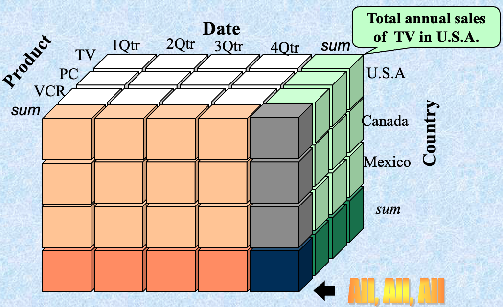
立方体：立方体的晶格
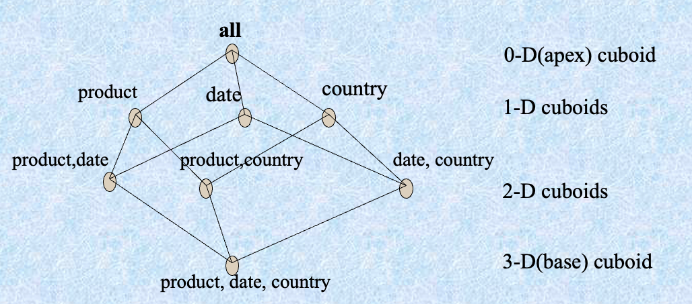
在数据仓库文献中，n-D基本立方体被称为基本小立方体。最顶层的0-D小立方体，它包含最高级别的摘要，被称为尖点小立方体。小立方体的晶格形成一个数据立方体。
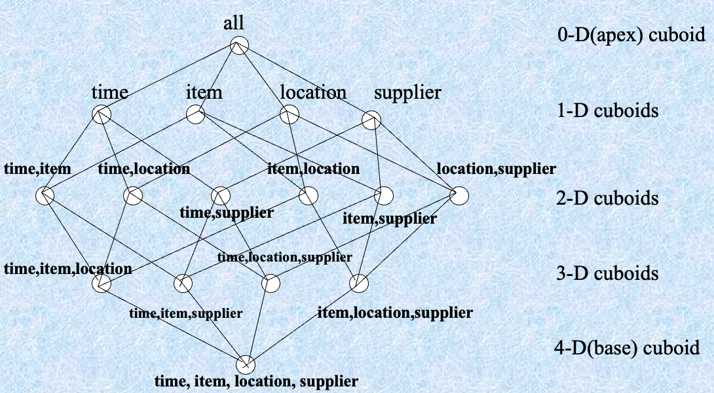
数据仓库的概念建模
建模数据仓库：维度和度量
- Star schema: 星型模式，中间有一个事实表与一组维度表相连
Example of Star Schema
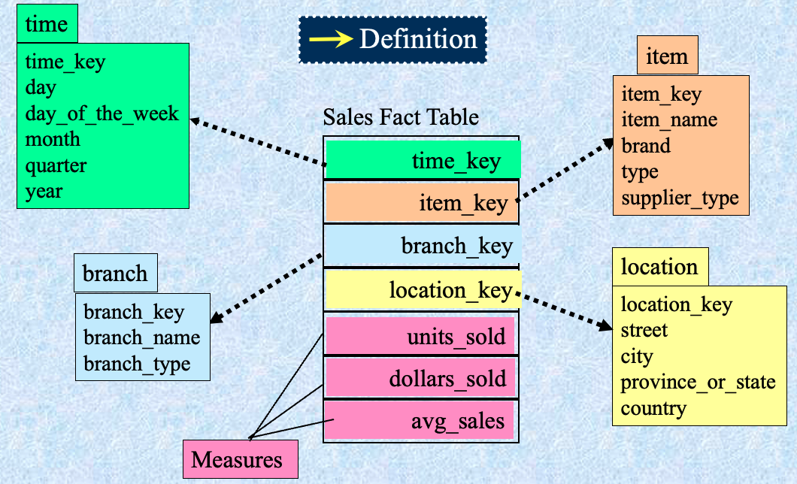
- Snowflake schema: 雪花模式，星型模式的一种改进，其中一些维度层次被规范化为一组较小的维度表，形成类似雪花的形状
Example of Snowflake Schema
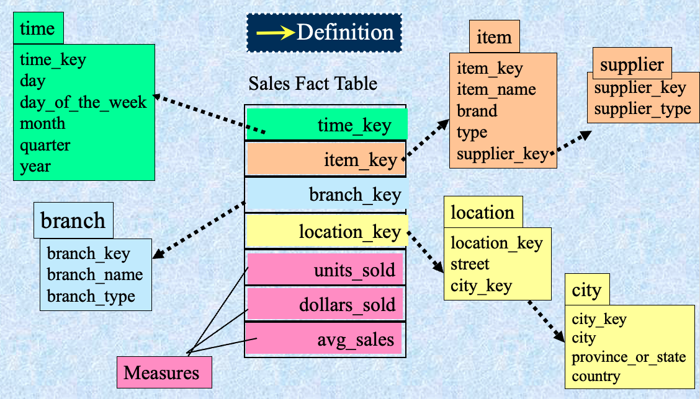
- Fact constellations: 事实星座，多个事实表共享维度表，被视为一组星型，因此被称为星系模式或事实星座
Example of Fact Constellation
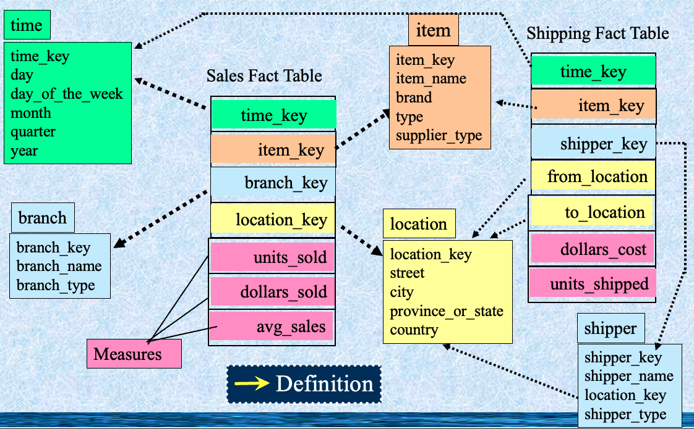
A Data Mining Query Language, DMQL
Cube Definition (Fact Table)
|
|
Dimension Definition ( Dimension Table )
|
|
Special Case (Shared Dimension Tables)
- First time as “cube definition”
- Other,
|
|
Defining a Star Schema in DMQL
|
|
Defining a Snowflake Schema in DMQL
|
|
Defining a Fact Constellation in DMQL
|
|
Measures: Three Categories
- distributive: 如果将函数应用于n个聚合值的结果与在不分区的所有数据上应用函数的结果相同。
- E.g., count(), sum(), min(), max().
- algebraic: 如果它可以通过具有M个参数的代数函数计算（其中M是有界整数），每个参数都是通过应用分布式聚合函数获得的。
- E.g., avg(), standard_deviation().
- holistic: 如果描述子聚合所需的存储大小没有常量界限。
- E.g., median(), mode(), rank().
A Concept Hierarchy: Dimension (location)
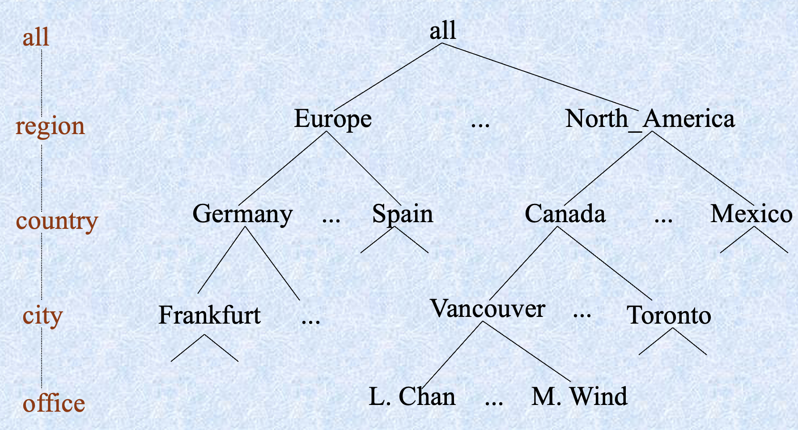
Multidimensional Data
Sales volume as a function of product, month, and region
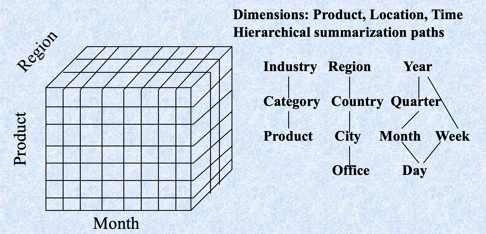
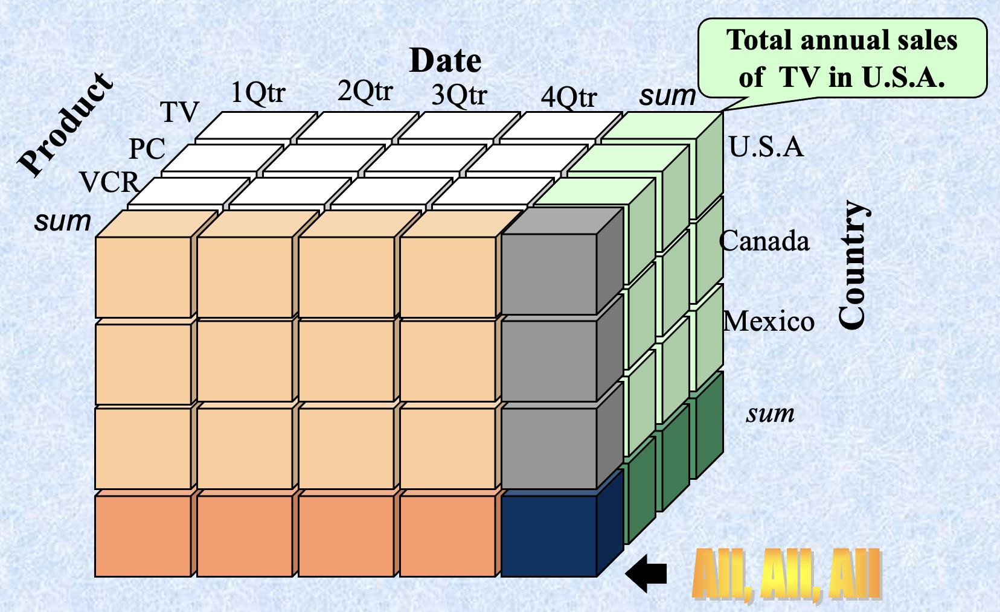
Browsing a Data Cube
- Visualization
- OLAP capabilities
- Interactive manipulation
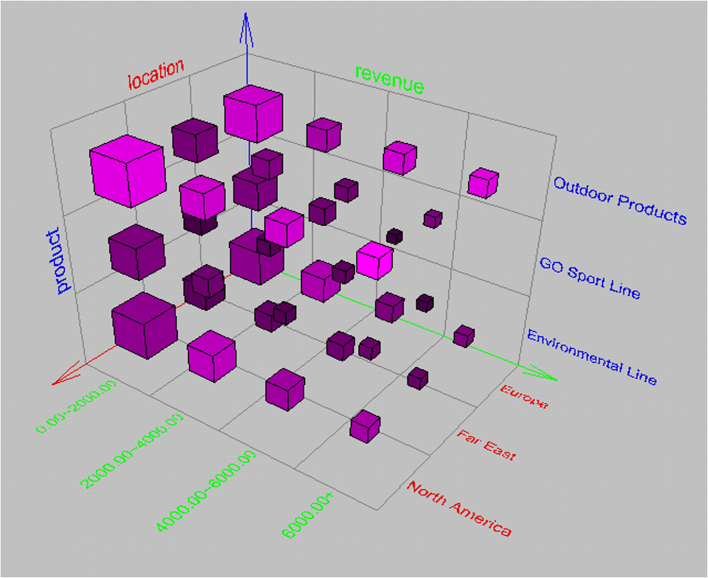
Typical OLAP Operations
- Roll up (drill-up): 汇总数据
- 通过沿着层次结构向上爬升或通过减少维度来实现
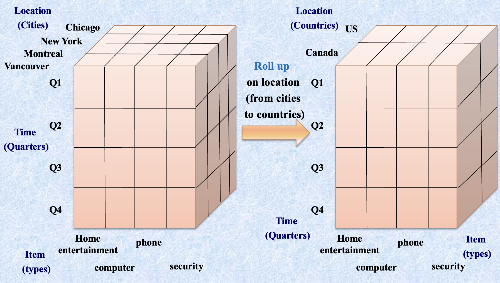
- Drill down (roll down): reverse of roll-up
- 从较高级别的摘要到较低级别的摘要或详细数据，或引入新的维度
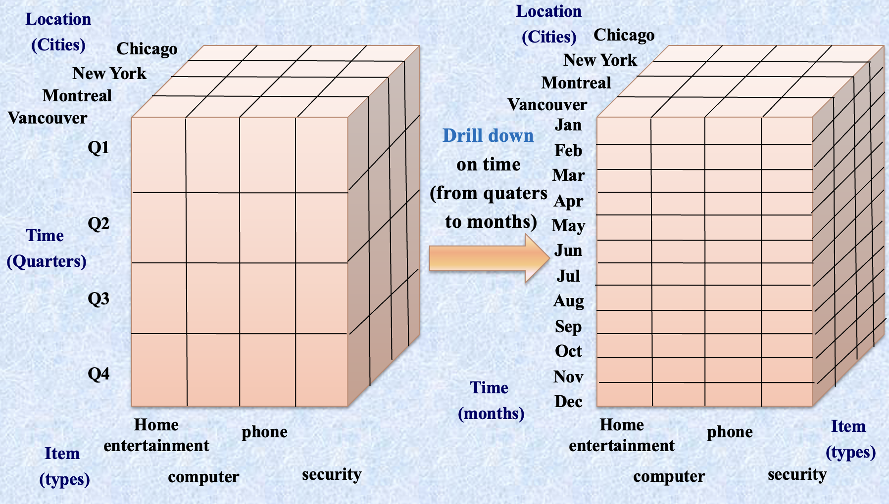
- Slice and dice:
- 投影和选择
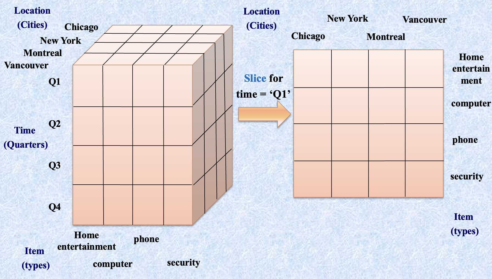
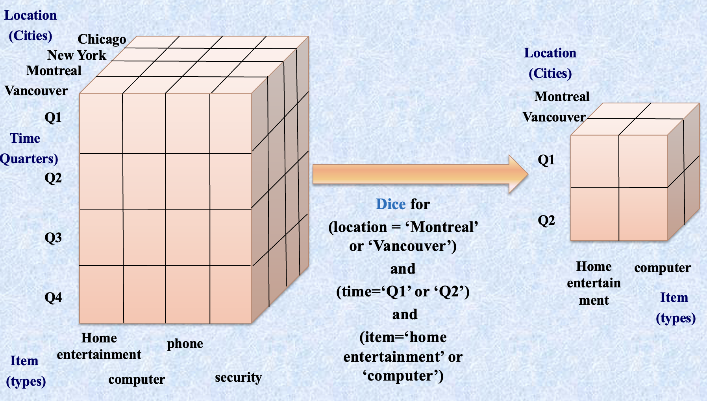
- Pivot (rotate):
- 重新定位立方体，可视化，从3D到一系列2D平面。
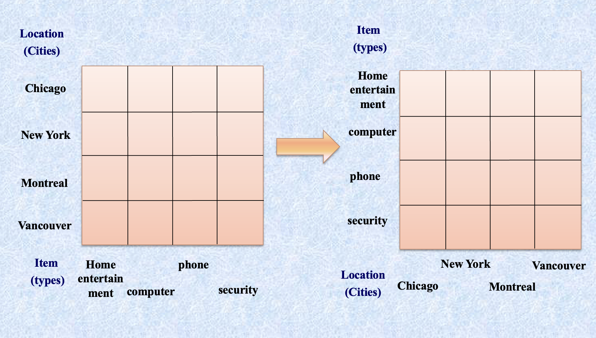
- Other operations
- drill across: 涉及（跨越）多个事实表
- drill through: 通过底层的立方体穿透到其后端关系表（使用SQL）
A Star-Net Query Model
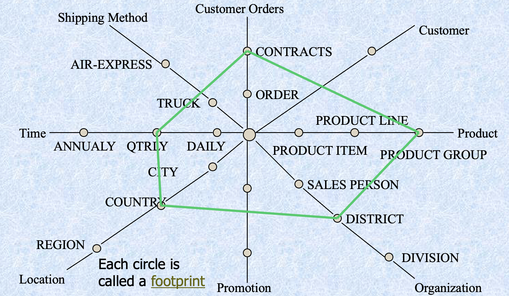
Data Warehousing and OLAP Technology
多层次体系结构
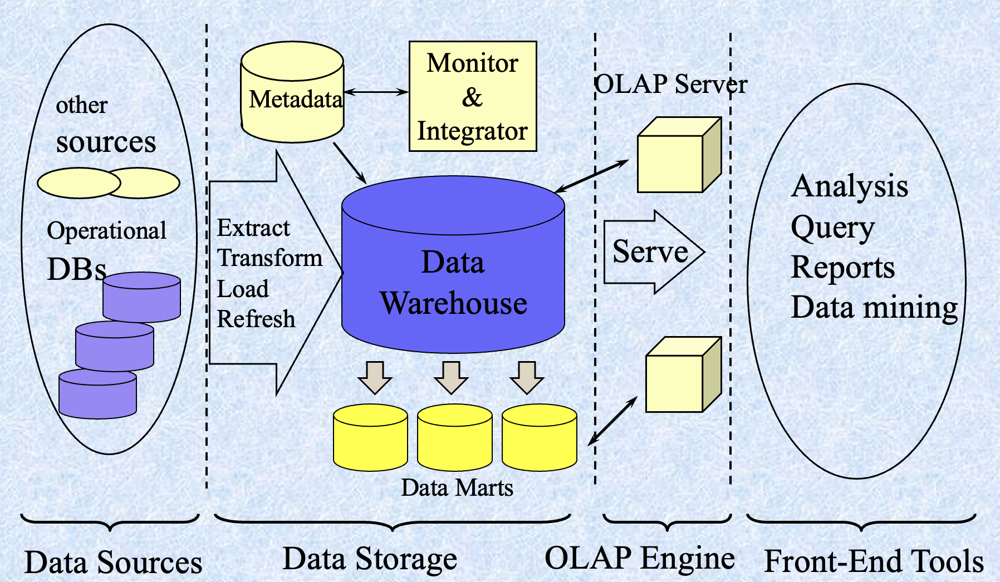
Three Data Warehouse Models
-
Enterprise warehouse
- 收集整个组织跨足的有关主题的所有信息
-
Data Mart
- 是对公司范围内数据的子集，对特定用户组有价值。其范围限于特定的、选择的群体，如营销数据集市
- 独立 vs. 依赖（直接来自仓库）数据集市
- 是对公司范围内数据的子集，对特定用户组有价值。其范围限于特定的、选择的群体，如营销数据集市
-
Virtual warehouse
- 对操作性数据库的一组视图
- 可能仅有一些可能的摘要视图会被实体化
Data Warehouse Development: A Recommended Approach
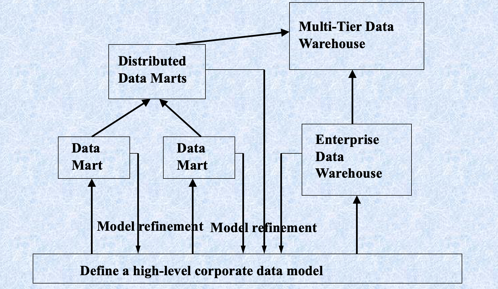
OLAP Server Architectures
- Relational OLAP (ROLAP)
- 使用关系型或扩展关系型数据库管理系统存储和管理仓库数据，使用OLAP中间件支持缺失的部分
- 包括优化DBMS后端、实现聚合导航逻辑以及其他工具和服务
- 更大的可伸缩性
- Multidimensional OLAP (MOLAP)
- 基于数组的多维存储引擎（稀疏矩阵技术）
- 针对预先计算的汇总数据进行快速索引
- Hybrid OLAP (HOLAP)
- 用户灵活性，例如，低级别：关系型，高级别：数组
- Specialized SQL servers
- 针对星型/雪花模式的SQL查询提供专门支持
Data warehouse implementation
Data Warehouse Design
数据仓库设计和数据库设计的差异
- 面向需求不同：数据库面向具体应用，需求一开始就很明确，而数据仓库是一个渐进的过程
- 设计目标不同：OLTP vs. OLAP
- 处理类型不同：面向操作型应用 vs. 面向分析型应用
- 数据来源不同：业务员输入 vs. 已存在的业务系统数据
- 系统设计的方法不同：
- 数据仓库可以采用数据驱动的设计方法
- 数据仓库设计可以分为数据仓库模型设计和数据装载接口设计两部分
数据仓库的设计步骤
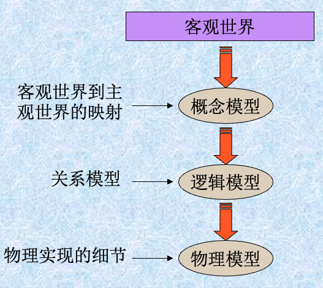
例如，将企业模型映射到数据仓库系统的过程
- 分析建立企业模型并映射到数据仓库概念模型
- 逻辑模型设计
- 物理模型设计
OLAP Modeling Methods
-
维表设计
- 维的变化
- 维表的共享
- 层次信息和分类信息的位置
-
事实表设计
- 事实表的特性
- 通用数据和专用数据事实表
维表的变化
- 维表通过记录因素的属性描述事件中包含的诸多因素
- 维表的本质是多维分析空间在某个角度上的投影
- 由于维表描述的是事物的属性，因此随着事物本身的变化，其属性也会产生改变
- 如果该属性与决策没有太大关系，例如电话号码属性对于分析顾客购买行为没有什么作用，则此属性的变化可以忽略不计
- 如果该属性与决策有关，例如某位顾客搬家后离超市更远了，我们试图分析其购买行为与家里距离变远有何关系，则不能将之忽略
- 对于需要记录其改变的维，有若干方法可以进行处理
- 当属性进行变化时，创建一个新记录
- 例如： 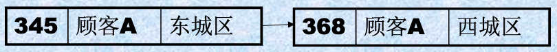
- 缺点：由于ID产生变化，被认为是两条记录
- 创建一个新的字段，将新地址填入
- 例如：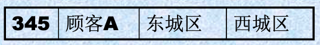
- 缺点：可扩展性不佳
- 增加一个修订号码字段和当前标记字段
- 例如：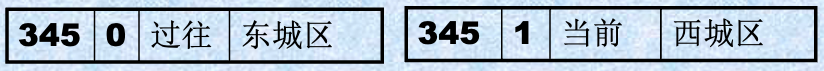
- 缺点：维表和事实表连接时需要采用主关键字＋修订号码，增加了事实表的复杂性
- 最为理想的解决方案：新建一个关键字客户ID，通过主关键字与之相连，使用时间字段标志当前的值
- 例如：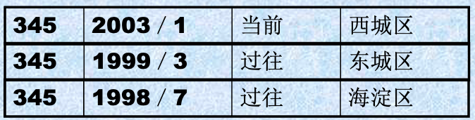
- 缺点：相对较为复杂
维表的共享
- 多个维表中可能包含相同的属性：
- 供货商维中包含地址维，而销售商维中可能也包含地址维，因而可能共享维表
- 由于数据仓库中时间维的重要性，各个维中都有可能包含时间维，因而可能共享时间维表
- 可以采用扩展的星座结构来描述共享维表
- 具体内容请参见上节
层次信息的位置
-
将维层次信息放入事实表
- 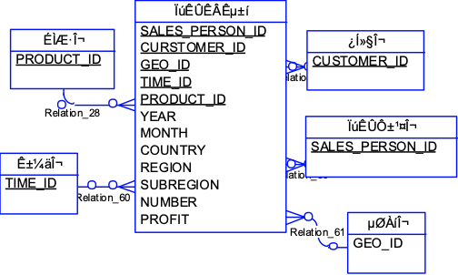
- 优点：计算极为方便
- 缺点：事实表会因此变得极为庞大
-
将维层次放在各自的维表中，通过主关键字与事实表相连
- 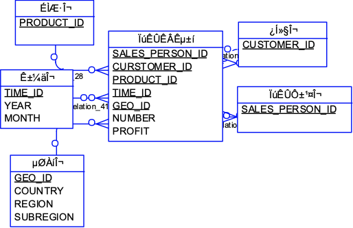
- 优点：减少了事实表的大小
- 缺点：OLAP性能比上一种方式差
分类信息的位置
-
在事实表中体现维分类
- 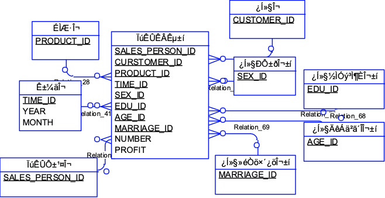
- 优点： OLAP性能好
- 缺点： 事实表的字段数和记录数增加
-
在维表中体现维分类
- 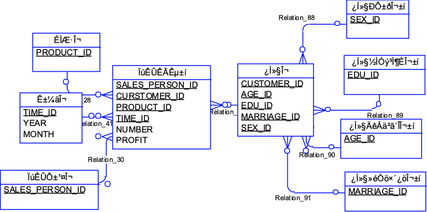
事实表的特征
- 与维表相比，事实表具有以下特征：
- 记录数量非常多
- 除了度量外，其他字段都是维表或者中间维表（雪花模型）的关键字
- 如果事实相关的维度很多，则事实表的字段数也会比较多
- 因此应当尽量减小一条记录的长度，才能避免事实表过大而难于管理
- 数据的粒度是影响事实表大小的关键因素，因而必须认真设计
通用数据和专用数据事实表
- 对应一个问题通常采用一个事实表，但在特殊情况下，也允许采用多个事实表
- 例如：超市里出售多种商品，由于商品本身分类不同，因此所采用的量度可能也不相同
- 如果将这些量度全部置于一个事实表中，由于某种类型的商品的量度其他商品可能不具备，因此则不可避免将在事实表中造成- 大量的数据空缺
- 解决办法：采用多个事实表，分为通用数据事实表与专用数据事实表加以管理
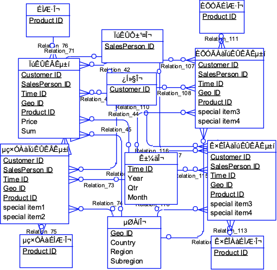
Optimization of Logical Model/Physical Model
数据仓库的逻辑模型设计
- 系统数据量估算
- 数据粒度的选择
- 数据的分割
- 表的合理划分
- 去除纯操作数据
- 增加导出字段
- 定义关系模式
- 定义元数据存储
- 定义记录系统
系统数据量估算
设在概念模型中出现的表的个数为$N$（这些表中应不包含不会放进数据仓库的表），对于每个表 $i$ ($0\leq u \leq N$), 计算表的大小$S_i$和表的主关键字大小$K_i$，然后估计每张表$i$在单位时间内最大记录数$L_{max}$和最少记录数$L_{min}$,则数据仓库的粗略数据量在以下范围： 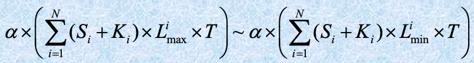
其中，$T$是数据在数据仓库中存在的周期。$\alpha$是考虑由于数据冗余和数据索引而使数据量增大的冗余因子,通常取$1.2~2$
本公式的含义是：
数据仓库数据量＝{累加[(每张表记录大小＋每张表主关键字大小)*每张表单位时间内记录的数量]*存储时间}*冗余因子
公式估算出的结果仅能作为参考
数据粒度的选择
数据量较小的情况下使用单一的数据粒度，即直接存储细节数据并定期在细节数据基础上进行数据综合
对于大数据量需要采用双重粒度，对于细节数据只保存近期的数据在数据仓库之中，当保留周期到达时，将距离当前较远的数据导出到磁带或存储设备上
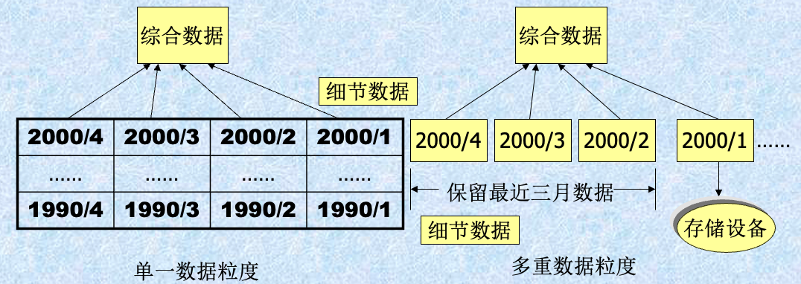
数据粒度策略
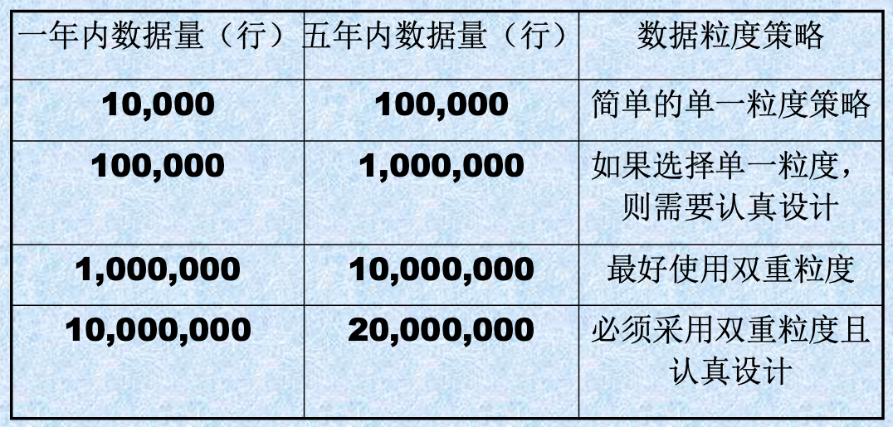
数据的分割
- 为何要进行数据分割？
- 数据仓库中数据量过大时，检索速度很慢
- 数据分割是指将数据分散到各自的物理单元里以便能够独立处理，以提高数据处理的效率
- 数据分割没有固定的标准，分割的方法和粒度应当根据实际情况确定
- 通常选择时间、地点、业务等划分
- 一般按照时间分割数据分布比较均匀，因此按照时间分割最为常见
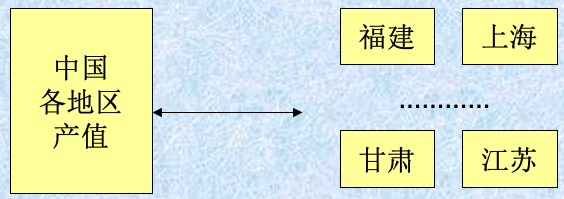
合理的表划分
-
直接存储字段数目很大的表，会造成以下问题：
- 各个字段的更新频率不一，放在一张表里造成数据追加工作的浪费
- 各个字段的访问频率不一，放在一张表里影响访问效率
-
因此需要对表中的内容进行合理的划分
- 按数据的稳定性划分
- 按业务规则进行表划分(略)
按数据稳定性进行表划分
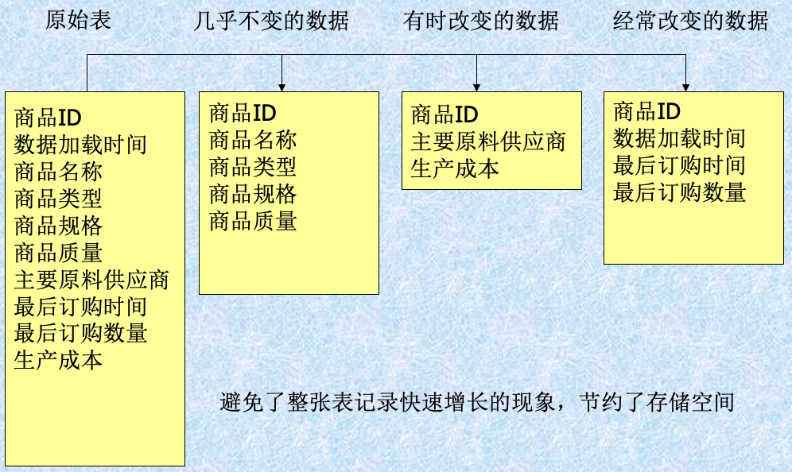
删除纯操作数据及增加导出字段
- 在将业务系统中的数据抽取到数据仓库系统中的过程里，如果发现某些数据对于决策没有作用，属于纯操作型数据,则可以将之删除
- 例：收款人字段
- 导出数据本身是冗余的，但是增加导出字段有利于数据以后的使用
- 例：在按月综合表中，可以加入平均价格，供货总价，供货总数量等导出字段
Meta Data
What is meta data?
元数据是描述数据的数据。
在数据仓库中，有几个数据层次：
- meta data，元数据
- current detailed data，当前详细数据
- older detailed data，较旧的详细数据
- lightly summarized data，轻度汇总数据
- highly summarized data，高度汇总数据
元数据是定义数据仓库对象的数据。它具有以下类型：
- 仓库结构的描述
- 模式、视图、维度、层次结构、派生数据定义、数据集市位置和内容
- 操作元数据
- 数据谱系（迁移数据和转换路径的历史）、数据的状态（活动、存档或清除）、监控信息（仓库使用统计、错误报告、审计追踪）
- 用于汇总的算法
- 从操作环境到数据仓库的映射
- 业务数据
- 业务术语和定义、数据所有权、收费政策
记录系统的定义
- 记录系统是操作型元数据的一部分
- 记录系统指明数据仓库中关系表的各个字段来源于业务数据库何处
- 例：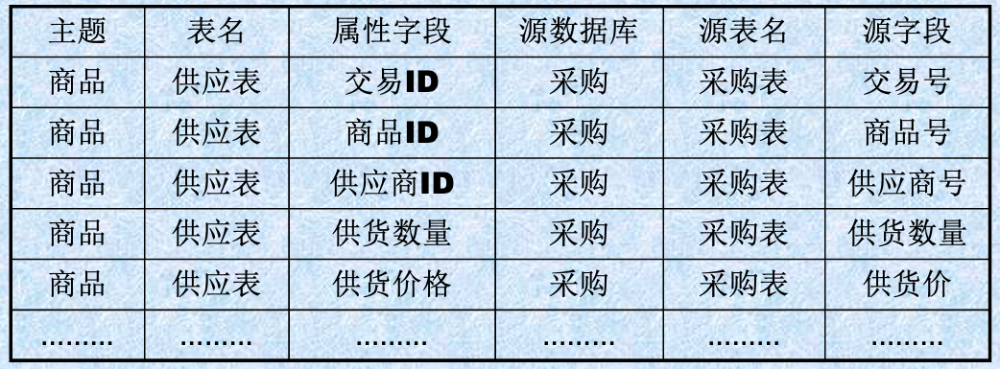
数据仓库物理模型设计
- 确定数据的存储结构
- 索引策略
- 数据存储策略与性能优化
- 多路聚集优化
- 表的归并
- 分割表的存放
- 按列存储
- 存储分配优化
- 数据装载接口设计
- 并行优化设计
Define the Storage Structure
一般的数据库数据量相对较小，除非业务要求必须保证数据的安全性和可恢复性，否则可以不采用并行存储结构
数据仓库由于数据的巨量存储，必须采用并行存储结构，例如RAID
索引技术：为什么不使用B树？
- B树是数据库中广泛使用的技术
- 在数据库中查找记录时，B树索引具有很高的性能
- 虽然B树对于数据仓库来说并不是一个好的技术，为什么呢？
B-tree Indexing Technology
原因是：
- B树要求属性必须有许多不同的值，例如itemID，customer ID等。
- B树要求查询条件较简单且结果较少
- 创建B树的空间复杂度和时间复杂度都很大
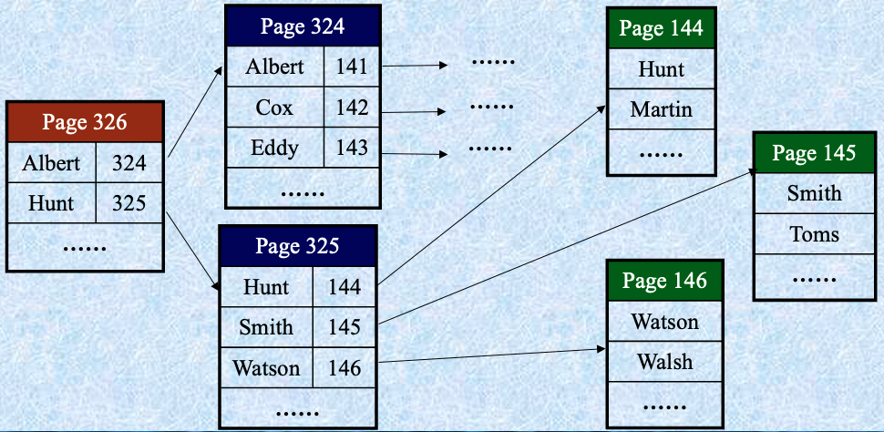
Indexing OLAP Data: Bitmap Index
- 特定列上的索引
- 列中的每个值都有一个位向量：位运算速度快
- 位向量的长度：基表中的记录数
- 如果基表的第i行具有索引列的值，则第i位设置为1
- 不适用于高基数域
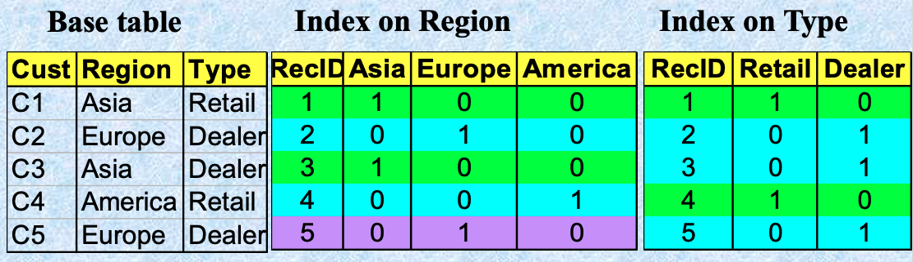
Indexing OLAP Data: Join Index
- 连接索引：JI(R-id, S-id)，其中 R（R-id，…）>< S（S-id，…）
- 传统索引将值映射到记录id列表
- 在数据仓库中，连接索引将星型模式的维度值与事实表中的行相关联。
- 例如，事实表：销售和两个维度城市和产品
- 对于每个不同的城市，连接索引维护一个包含记录城市销售的元组的R-ID列表
- 例如，事实表：销售和两个维度城市和产品
- 连接索引可以跨越多个维度
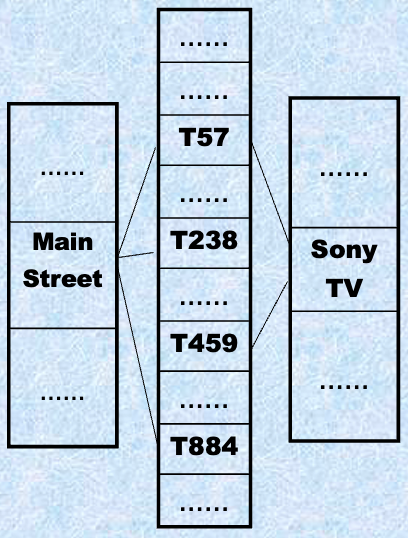
Data Storage Strategy
Table Mergence
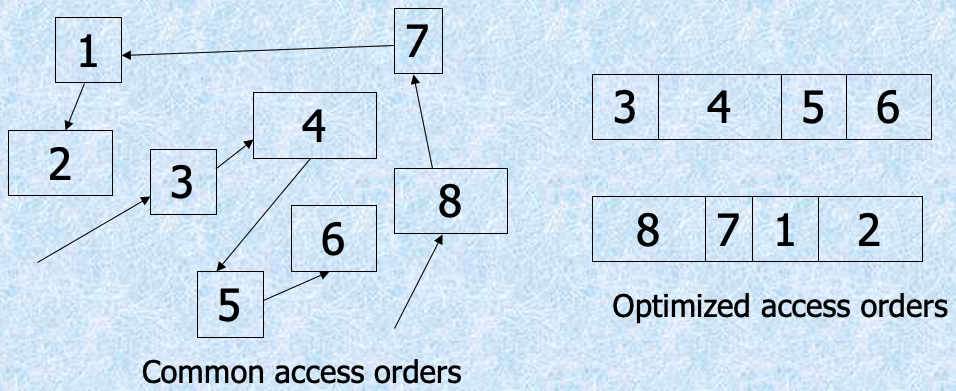
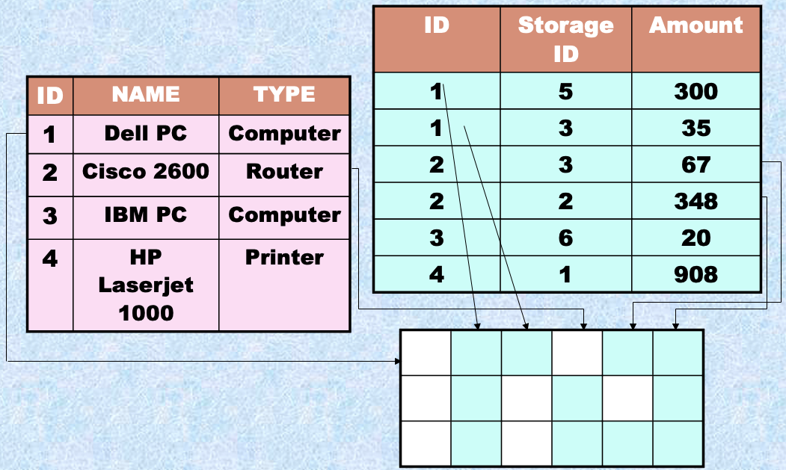
Add Redundancy
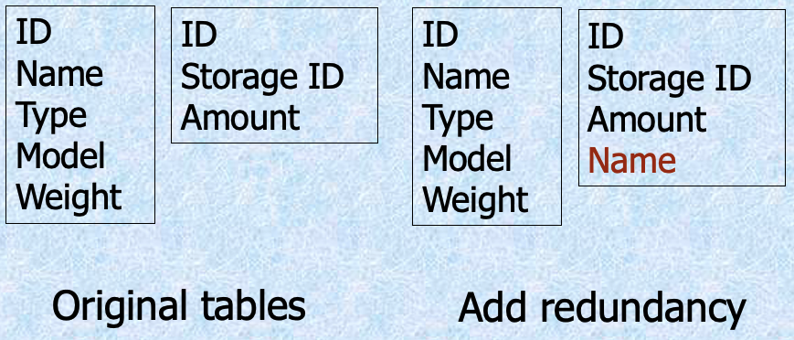
Dividing Table
- 在逻辑设计中，大表可以分成小表。当访问大表时，可以用小表替代。
- 在物理设计中，可以使用分布式存储方法。
- 表可以存储到磁盘阵列中。
Efficient Methods for Data Cube Computation
Data Cube: High Efficiency Computing
- 数据立方体可以看作是一个立方体格点的网格
- 最底部的立方体是基本立方体
- 最顶部的立方体（顶点）仅包含一个单元格
- 在具有L级的n维立方体中有多少个立方体？
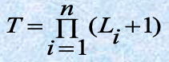
Materialization of data cube
- 物化每个（立方体）（完全物化）、无（不物化）或一些（部分物化）
- 选择要物化的哪些立方体
- 基于大小、共享、访问频率等
Data Cube Operation
- 在DMQL中定义和计算立方体
|
|
- 转换为类似SQL的语言 (with a new operator cube by, introduced by Gray et al.‘96)
|
|
- 需要计算以下的Group-Bys
|
|
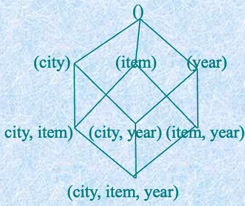
Iceberg Cube
仅计算计数或其他满足条件（如 HAVING COUNT(*) >= minsup）的立方体单元格！
Motivation
- 在稀疏立方体中，只有一小部分立方体单元格可能位于“水面”之上
- 仅计算“有趣”的单元格——超过一定阈值的数据
- 避免立方体的爆炸性增长
Multiway Array Aggregation
- 将数组分成块（适应内存的小子立方体）。
- 压缩稀疏数组寻址：（chunk_id, offset）
- 通过按最小化每个单元格访问的次数的顺序访问立方体单元格，减少内存访问和存储成本。
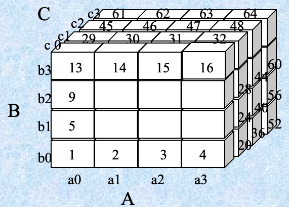
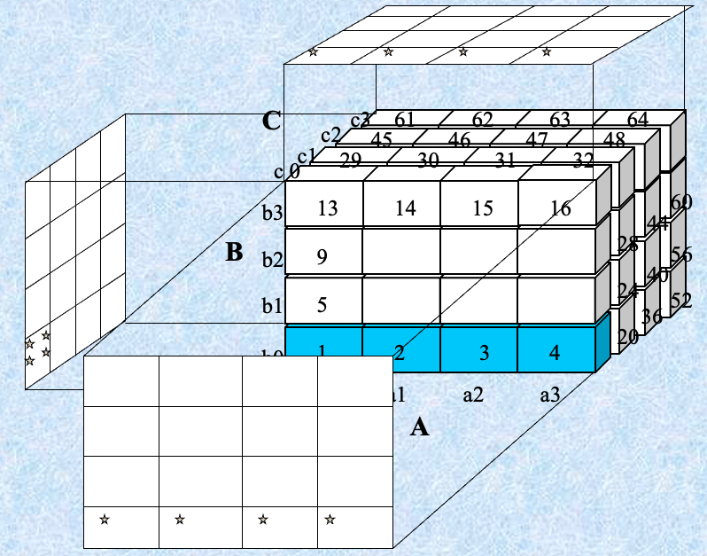
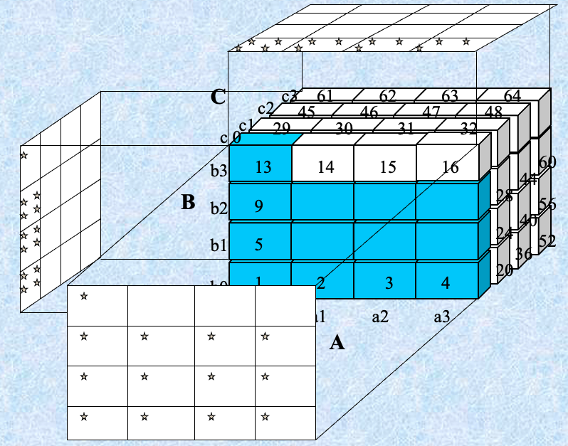
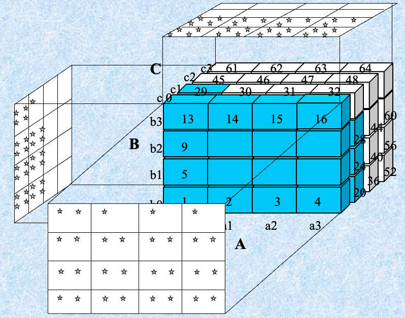
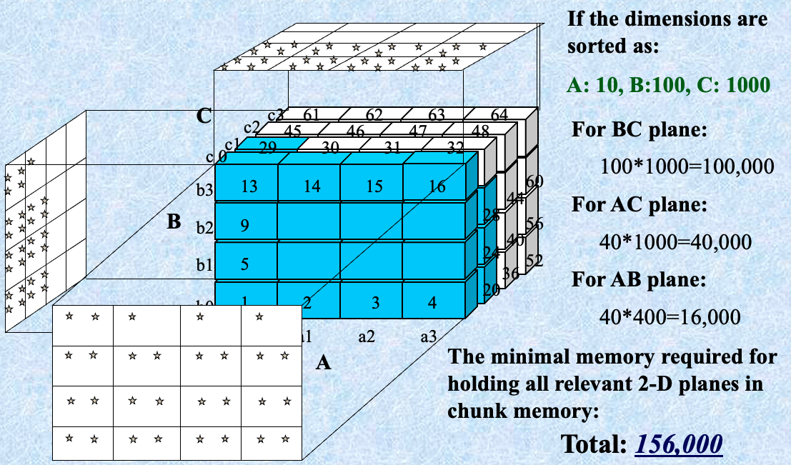
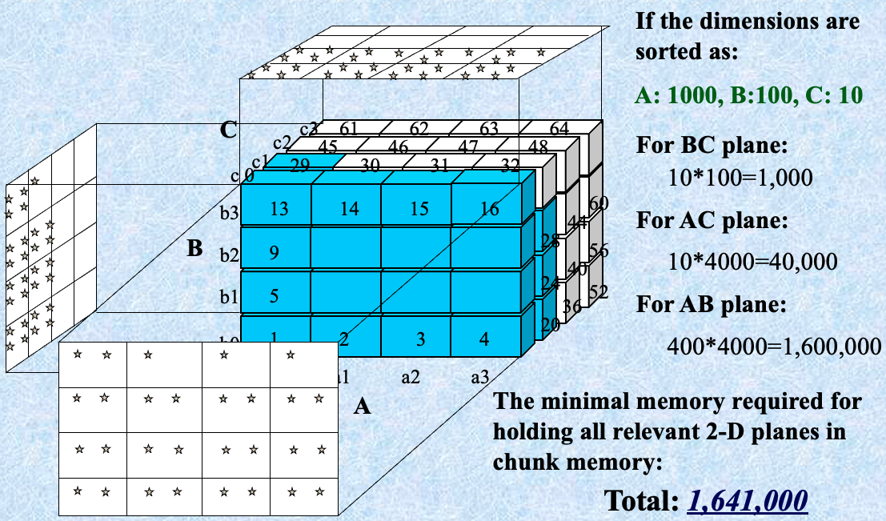
- 方法：应按照其大小升序排序并计算平面。
- 思路：将最小的平面保留在主内存中，仅为最大平面获取和计算一个块
- 该方法的限制：仅对小型维数计算良好
- 如果维度较多，可以研究冰山立方体计算方法
有效处理OLAP查询
- 确定应在可用立方体上执行哪些操作：
- 将钻取、卷动等转换为相应的SQL和/或OLAP操作，例如，切片=选择+投影
- 确定相关操作应应用于哪些物化立方体
- 在MOLAP中探索索引结构和稠密数组结构与压缩数组结构的差异
Bottom-Up Computation (BUC)
- 自底向上计算（BUC）
- BUC（Beyer＆Ramakrishnan，SIGMOD'99）
- 自底向上的立方体计算
- 将维度划分为分区，并促进冰山修剪
- 如果一个分区不满足min_sup，则可以修剪其后代
- 如果minsup = 1 => 计算完整的CUBE！
BUC: Partitioning
- 通常，整个数据集无法适应主内存
- 对不同的值进行排序，将其分为适合的块
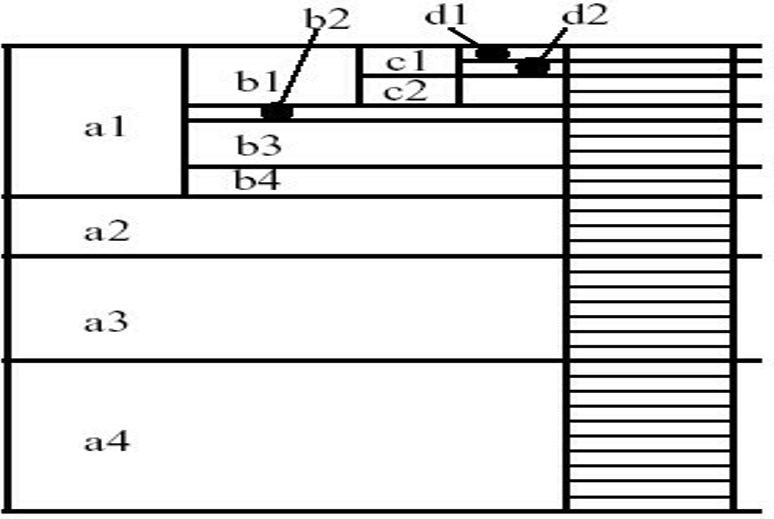
Plan and Implementation of Data Warehouse
- 数据仓库的应用目标
- 企业的核心业务
- 优化企业内部管理控制
- 为企业增加商业机会
- 建设数据仓库的必要性
- 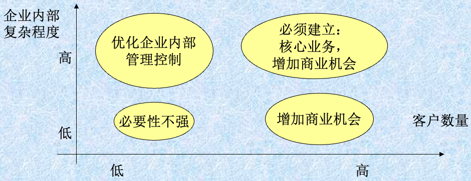
可通过计算ROI（Return of Investment）来衡量投资回报的价值
数据仓库主题的选择和阶段规划
- 数据仓库的实施是一个极为复杂的长期过程，因此，应选择当前最急需、能在短期内产生效益、业务模型清晰的任务首期实现
- 选择首期实现主题的参考原则：
- 优先实现管理者目前需求最迫切和最关心的主题
- 优先选择能在短期内产生效益的主题
- 推后选择业务逻辑准备不充分的主题
- 推后实施技术难度较大、可实现性较低、投资风险大的主题
- 维护阶段
- 数据仓库的维护极为重要，一般数据仓库在建立完成之后，都需要一至两年的维护
- 数据仓库的维护过程就是DSS逐步产生效益的过程
数据仓库后端工具
- 数据抽取(Data extraction): get data from multiple, heterogeneous, and external sources
- 数据清洗(Data cleaning): detect errors in the data and rectify them when possible
- 数据转换(Data transformation):convert data from legacy or host format to warehouse format
- 数据装载(Load): sort, summarize, consolidate, compute views, check integrity, and build indicies and partitions
- 刷新(Refresh): propagate the updates from the data sources to the warehouse
Further development of data cube technology
Discovery-Driven Exploration of Data Cubes
- Hypothesis-driven: 由用户进行探索，搜索空间巨大
- Discovery-driven (Sarawagi et al.‘98)
- 预先计算指示异常的度量，引导用户在所有聚合级别进行数据分析
- 异常：基于统计模型，与预期值明显不同的值
- 使用背景颜色等视觉提示反映每个单元格的异常程度
- 异常指标的计算（建模拟合和计算SelfExp、InExp和PathExp值）可以与立方体构建重叠
Examples: Discovery-Driven Data Cubes
From data warehousing to data mining
Data Warehouse Usage
- 三种数据仓库应用
- 信息处理
- 支持查询、基本统计分析和使用十字表、表格、图表和图形的报告
- 信息处理
- 分析处理
- 对数据仓库数据进行多维分析
- 支持基本的OLAP操作，如切片、切块、钻取、旋转
- 数据挖掘
- 从隐藏的模式中发现知识
- 支持关联、构建分析模型、执行分类和预测，并使用可视化工具呈现挖掘结果。
- 三个任务之间的差异
From On-Line Analytical Processing to On Line Analytical Mining (OLAM)
- 为什么联机分析挖掘？
- 数据仓库中数据的高质量
- DW包含集成的、一致的、清理过的数据
- 数据仓库中数据的高质量
- 围绕数据仓库的可用信息处理结构
- ODBC、OLEDB、Web访问、服务设施、报告和OLAP工具
- 基于OLAP的探索性数据分析
- 带有钻取、切片、切块、旋转等的挖掘
- 在线选择数据挖掘功能
- 集成和交换多个挖掘功能、算法和任务
Summary
- Data warehouse
- A subject-oriented, integrated, time-variant, and nonvolatile collection of data in support of management’s decision-making process
- A multi-dimensional model of a data warehouse
- Star schema, snowflake schema, fact constellations
- A data cube consists of dimensions & measures
- OLAP operations: drilling, rolling, slicing, dicing and pivoting
- OLAP servers: ROLAP, MOLAP, HOLAP
- Data warehouse implementation
- Efficient computation of data cubes
- Partial vs. full vs. no materialization
- Multiway array aggregation
- Bitmap index and join index implementations
- Further development of data cube technology
- Discovery-drive and multi-feature cubes
- From OLAP to OLAM (on-line analytical mining)